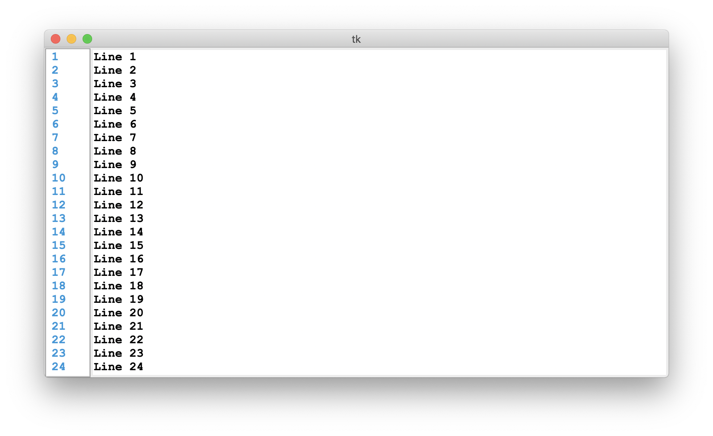

TkLineNums is a simple line numbering widget for Python's tkinter GUI library. It directly connects to a Text widget and even supports ttk themes through the set_to_ttk_style() method.
pip install tklinenums
The following options are available when creating an instance of the TkLineNums widget:
| Option | Description | Type |
|---|---|---|
| master | The parent widget | Tkinter widget (defaults to tkinter.Misc) |
| editor | The Text widget the line numbers will connect to | Tkinter Text widget (or child class) |
| justify | The alignment of the line numbers | A string as either "left", "right", or "center" |
| *args | Arguments for the Canvas widget | Any arguments used for the Canvas widget |
| **kwargs | Keyword arguments for the Canvas widget | Any keyword arguments used for the Canvas widget |
To run the example, run python3 tests/example.py from the project directory.
To contribute to the project, simply fork the repository, make your changes, and submit a pull request. Be sure to include a clear description of your changes and why you think they are important.